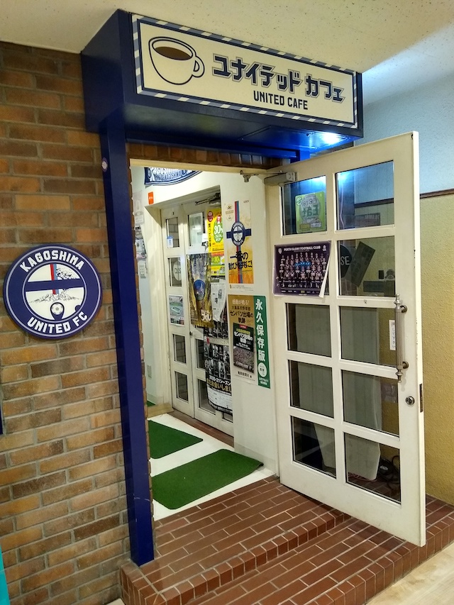

年忘れクリスマスクイズナイト 2020/12/24

どうも〜 「ミナミさんちのクイズ」の中の人のひとり杉原です。
クリスマスイブに鹿児島ユナイテッドFCオフィシャルカフェでスマートフォンを使った早押しクイズを行います。
今回の企画のテーマは「2020の出来事を振り返る」です！
問題はすべて「今年2020年に起こったこと」もしくは「鹿児島ユナイテッドＦＣ」にちなんだ問題を出題します。
〜場所・日時・参加費〜
場所: 鹿児島ユナイテッドカフェ
日時: 2020/12/24 (木) 19:00 〜 21:00
参加費: 1500円
なんと、飲み物・アルコール飲み放題！ お菓子食べ放題です！！！！
〜ルール〜
●予選ラウンド
(1) 4○3✕
4回正解したら勝ち抜け。3回誤答したら失格です。
(2) 4○3休
4回正解したら勝ち抜け。1回誤答したら3問休みです。
(3) 4○n休
4回正解したら勝ち抜け。誤答したらそれまで間違えた数だけおやすみです。
例: 1回目の誤答で1問休み、2回目の誤答で2問休み、3問目の誤答で3問休み。
(4) マニアクス
今年鹿児島のネットでバズったネタから出題します。
ルールは4○2休です。
(5) ユナイテッド・アウェイ戦
ルールは4○2休
このラウンドだけ時事問題ではなく、J3で戦ったチームの地元にちなんだ問題を2問づつ出します。
＜予選コースの共通ルール＞
使用問題は35問づつ。勝ち抜けは４人までです。
１位と２位は☆２つ、３位と４位は☆１つ獲得します。
●決勝戦 〜2020年ユナカフェ王決定戦〜
35問限定です。正解すると☆を１つ獲得します。
誤答すると3問休みです。
☆の数が最も多い人が優勝です。
●人名の扱いについて
○西洋人はファミリーネームだけでも正解です。
例：「スミス」
もちろんフルネームの「ジョンスミス」○
○東洋人はフルネームでお願いします。スポーツ選手の登録名や芸名は例外とします。
例：「鈴木一郎」「イチロー」ただし「織田信長（正解）」に対する「信長」は×
○特別ルール「名字おしい！」
「佐藤」「鈴木」のように、日本人を名字だけ答えた場合正解扱いとしますが、同時に誤答時のペナルティも負います。
〜参加するには〜
私の、
TwitterアカウントのDM、メール( ken.kiva[at]gmail.com )、もしくは
https://fb.me/e/1SLmSNqBhまでご連絡をお願いします。
※ メールアドレスの[at]を@に置き換えてくさだい。
クイズ研究会に所属経験のある方もご参加を歓迎しますが、
相応のハンディキャップを背負っていただくことになります！
クイズ研究会歴１〜２年の初心者の場合はその限りではありませんので、奮ってご参加ください！